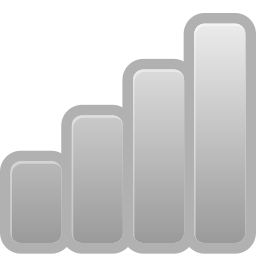

 Funknetz Server-/Client-Software
Features:
Client:
* Steuern der Funksteckdosen mittels grafischer Oberfläche über das Netzwerk.
* Vergeben von eigenen Bezeichnungen für die einzelnen Geräte.
* Zeitsteuerung der einzelnen Geräte mittels selbst erzeugter Zeitereignisse.
* Störsender, um einen bestimmten Kanal zu stören.
* Plattformunabhängig dank Java.
Server:
* Empfang von Steuerungsbefehlen über das Netzwerk.
* Autonome Verwaltung von Zeitereignissen und Jammer-Aufträgen, auch bei Beenden des Clients.
* Kommunikation mit der Platine von Michael M. (www.marxcomputer.de --> Bastelecke --> Funksteckdosen)
* Lauffähig auf Windows, Linux, Sun Solaris 2.8 und MacOSX
* Kann sowohl im grafischen (GUI) als auch nicht-grafischen (Konsole) Modus gestartet werden.
* Bequeme Auswahl des Serial-Ports über das GUI-Interface.
Quick Download
Bauanleitung für die Steuerungsplatine
Screenshots
Sourceforge Projektseite
** NEWS **
02.
November 2009: Version 0.3 steht nun zum Download bereit! Es gibt zwar
nicht, wie versprochen, ein neues Feature, dafür wurde das Client- und
Server-GUI überarbeitet und sieht nun um einiges besser aus. Ab jetzt
werde ich mich wieder um neue Features kümmern!
30.
Oktober 2009: Es existiert jetzt ein SVN-Repository, erreichbar über
die Sourceforge-Projektseite. Dort findet sich auch ein SVN-Browser,
mit dem man sich den Sourcecode bequem im Browser anschauen kann. Dies
funktioniert auch ohne sourceforge.net-Account, also ganz anonym.
Durch die Einrichtung von SVN erhöht sich die Transparenz des
Sourcecodes ungemein, da dieser somit viel schneller und einfacher zur
Verfügung steht. Der Sourcecode steht jedoch auch weiterhin im
tar.gz-Format in der Download-Sektion bereit.
30. Oktober 2009: Version 0.2.1 wurde released! Dies ist hauptsächlich
ein Bugfix-Release, liefert aber auch ein neues Feature. Es traten
Probleme auf, wenn zur selben Zeit mehrere Events ausgeführt werden
sollten, dies funktioniert nun einwandfrei. Es kann jedoch zu
Verzögerungen kommen, da die FunknetzBox nur einen Befehl auf einmal
senden kann, so wie auf der Fernbedienung auch nicht zwei Tasten auf
einmal gedrückt werden können. Würden also theoretisch mehr als ~60
Events zur selben Minuten zur Ausführung freigegeben werden, so könnte
es passieren, dass manche dieser Events erst eine Minute nach dem
ursprünglich angesetzten Zeitpunkt ausgeführt werden. Da aber nur
maximal 12 Geräte mit der FunknetzBox angesteuert werden können,
sollte dies eigentlich keine Rolle spielen, da nie mehr als 12 Events
pro Minute existieren sollten.
Das neue Feature ist ein "Jetzt!"-Button im Zeitsteuerungs-GUI, der die
Werte für ein neues Event auf den jetzigen Zeitpunkt einstellt. Dies
beschleunigt ungemein die Erstellung neuer Events für den Endnutzer. Es
war teilweise sehr mühselig den Wecker fuer den nächsten Tag
einzustellen, wenn man erst 5 Drop-Down-Boxen einstellen musste.
27.
Oktober 2009: Version 0.2 ist nun fertig. Ich war sehr beschäftigt mit
meinem Studium und hab lange nicht am Funknetz-Projekt
weitergearbeitet. Nun habe ich mir ein Herz gefasst und Version 0.2
vervollständigt. Neben einigen Bugfixes ist die Zeitsteuerung nun
vollständig integriert und hoffentlich weitgehend bugfrei: per
GUI-Interface können Zeitereignisse in einer Tabelle angelegt,
bearbeitet und gelöscht werden. Diese kann an den Server übertragen
bzw. vom Server empfangen werden. Wird ein Zeitereignis ausgeführt,
wird es gleichzeitig aus der Liste entfernt. Die Ausführung erfolgt auf
die Sekunde genau und kommt es zum Serverabsturz, so wird die zuletzt
aktuell gehaltene Liste wiederhergestellt. Weiterhin wurde die
Jammer-Steuerung aus dem Server entfernt und in den Client integriert.
Für die nächste Version
werde ich das GUI überarbeiten um das Erscheinungsbild und die
Benutzerfreundlichkeit zu erhöhen. Neue Features sind geplant
aber ich habe einfach zu viele Ideen um mich jetzt schon festlegen zu
wollen: mal sehen für was ich mich am meisten begeistern kann.
11.
Juli 2009: Ich habe der Serversoftware einen Störsender (Jammer)
hinzugefügt. Dieser ist wieder, wie der Server selbst auch, sowohl
grafisch als auch über Konsole steuerbar, zudem gab es einige Bugfixes.
Zudem gibt es den Server jetzt für viele weitere Betriebssysteme.
11. Juli 2009: Ich habe die Box erfolgreich mit einem Serial->USB Adapter getestet.
Über diese Software:
Funknetz
Server-/Client ist eine Software für die Fernsteuerung von
Funksteckdosen der Firma REV, welche als Set mit 3 Steckdosen und
einer Fernbedienung in vielen Baumärkten und im Internet bereits für
15,00 € erhältlich ist. Die Fernsteuerung funktioniert mittels einer
von Michael M. entwickelten Platine, welche mit der
Fernbedienung von REV verlötet wird. Die Platine wird mittels RS-232
Schnittstelle mit dem PC verbunden. Eine Konstruktionsanleitung für die
Platine ist auf http://www.marxcomputer.de unter "Bastelecke" --> "Funksteckdosen" zu finden.
Dokumentation
CLIENT
Der Startbildschirm
Der Startbildschirm des Client bietet Zugriff auf die Module
(Fernsteuerung, Jammer und Zeitsteuerung), sowie die Möglichkeit über
"Einstellungen" die Bezeichner der Geräte und Kanäle zu setzen. Im
Abschnitt rechts wird die IP-Adresse und der Port des Servers gesetzt.
Die anderen Module versuchen die Verbindung mit diesen Parametern
herzustellen.
Der Fernbedienung
Da Fernbedienungs-Modul bietet die Möglichkeit, wie mit der
normalen Fernbedienung auch, Geräte Ein- und
Auszuschalten. Die Funknetzbox hängt dabei natürlich am Server. Über
"Einstellungen" im Haupt-GUI können zusätzlich die Bezeichnungen der
einzelnen Kanäle und Schalter (Geräte) geändert werden. Bevor die
Fernbedienung benutzt werden kann, muss zuvor im Haupt-GUI eine
IP-Adresse und ein Port gesetzt werden.
Der Jammer
Nach der Wahl
des Kanal und Schalters (Gerätes), kann er mit einem Klick auf den
Start-Button gestartet bzw. mit einem Klick auf den Stop-Button wieder
gestoppt werden. Der Client kann hierbei jederzeit geschlossen werden
und der Jammer läuft dennoch weiter, da der Server solange mit der
Störung fortfährt, bis er vom Client wieder ein Stopsignal bekommt.
Hierbei wird im Abstand von einer Sekunde zuerst ein "ON"- und dann ein
"OFF"-Befehl gesendet, sodass das betroffene Gerät permanent mit
Befehlen überflutet wird.
Die Zeitsteuerung
Zu Beginn oder bei einem Druck auf den
"Einlesen"-Button, wird die Liste mit Zeitereignissen vom Server
abgefragt und die Serveruhr synchronisiert. Analog wird bei einem Klick
auf "Uebernehmen", die aktuell in der Tabelle gehaltene Liste mit
Zeitereignissen an den Server übertragen. Zeitereignisse können bequem
per GUI erstellt und optional auch mit einem Intervall "T" (tägliche
Ausführung) oder "W" (wöchentliche Ausführung) versehen werden. Der
Client kann jederzeit geschlossen werden und der Server verwaltet die
Zeitereignisse autonom. Beim Start des Servers wird die zuletzt
gehaltene Tabelle mit Zeitereignissen von der Festplatte
wiederhergestellt. Diese schreibt der Server bei jeder noch so kleinen
Tabellenänderung sofort neu.
SERVER
Der Server kann sowohl grafisch, als auch auf der Konsole gestartet
werden (siehe FAQ). Er bietet bis auf die Einstellung des Ports und
Serialports keine weiteren Funktionen, unterrichtet aber in Textform
über alle Geschehnisse.
Motivation für diese Software:
Der ursprüngliche Autor des Projekts hat zwar eine Software entwickelt, mit deren Hilfe die Platine
angesteuert werden kann, diese ist jedoch nur für Windows erhätlich. Da
ich ausschließlich Linux nutze, begann ich beim Nachbau der Platine
auch mit der Entwicklung einer eigenen Software in Java, welche auf
vielen Systemen lauffähig ist.
Über das Software-Design:
Die
Software ist, wie bereits erwähnt, vollständig in Java geschrieben. Da
viele neuere APIs benutzt wurden, wird Java SE 1.5 für den Betrieb
benötigt. Für die Kommunikation zwischen der Platine und dem PC benutze
ich die freie API RXTXcomm (www.rxtx.org), mit deren Hilfe die Kommunikation über Serial- oder
Parallelport auf vielen Systemen möglich ist. Momentan unterstützt
werden Linux (32- und 64bit), Windows (32bit), MacOSX und Solaris (32-
und 64bit).
Download:
Auf http://www.sourceforge.net/projects/funknetz/files
kann sowohl Client als auch Server bezogen werden. Manchmal wird aus
unbekannten Gründen unter Linux das RXTXcomm Paket benötigt, da die JVM
dieses nicht findet. Die Ursache hierfür ist noch ungeklärt aber hängt
vielleicht mit den Class-Path Einstellungen im Betriebssystem zusammen.
Es sollte sichergestellt werden, dass "." (also der aktuelle Ort) im
Class-Path enthalten ist. Dieser
Fehler tritt jedoch nur sporadisch auf. Sollte er auftreten, so kann
das RXTXcomm Package auf vielen Linuxdistributionen (z.B. Ubuntu)
direkt über den Paketmanager installiert werden. Sollte dies nicht
verfügbar sein, so kann man die Binaries oder den Source Code von http://www.rxtx.org herunterladen und gemäß der beiliegenden Installationsanleitung installieren.
Zukunft:
Für
Version 0.4 sind neue Module geplant, welche genau steht noch nicht
fest. Denkbar wäre etwa ein spezielles "Kaffee"-, "Licht"-, oder
"Wecker"-Modul.
FAQ:
F: Beim start des Programms über die grafische Oberfläche (z.B. Windows: "doppel-klick") geschieht augenscheinlich nichts.
A:
Dies ist ein sporadisch auftretendes Problem und liegt vermutlich an
der Art und Weise wie ihr Betriebssystem versucht das .jar zu starten, vorallem mit welchen Classpath-Einstellungen.
Starten Sie es einfach über die Konsole mit "java -jar
FunknetzClient.jar" bzw. "java -jar FunknetzServer.jar".
F: Kann der Server auch auf Betriebssystemen ohne grafische Oberfläche, also ausschließlich auf der Konsole genutzt werden?
A:
Ja. Hierzu muss der Server einfach mit den Argumenten <port> (der
TCP/IP Port, auf dem der Server laufen soll) und <serial_port>
(die betriebssystem-spezifische Bezeichnung des Serial-Ports an dem die
Platine angeschlossen ist) gestartet werden - z.B. "java -jar
FunknetzServer.jar 5000 /dev/ttyS0" (Linux) oder "java -jar
FunknetzServer.jar 5000 COM1" (Windows). Der Server startet dann im Konsolenmodus.
F: Wie kann die Software mit einem Serial->USB Adapter genutzt werden?
A:
Hierzu muss lediglich die richtige Serialportbezeichnung eingegeben
werden. Unter Linux z.B. /dev/ttyUSB0 oder unter Windows 2000: COM3.